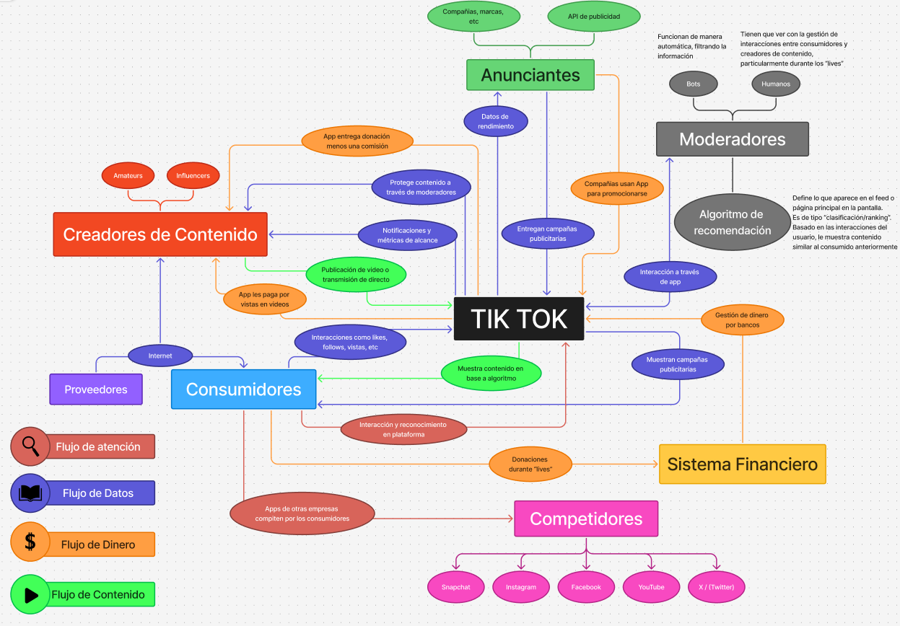
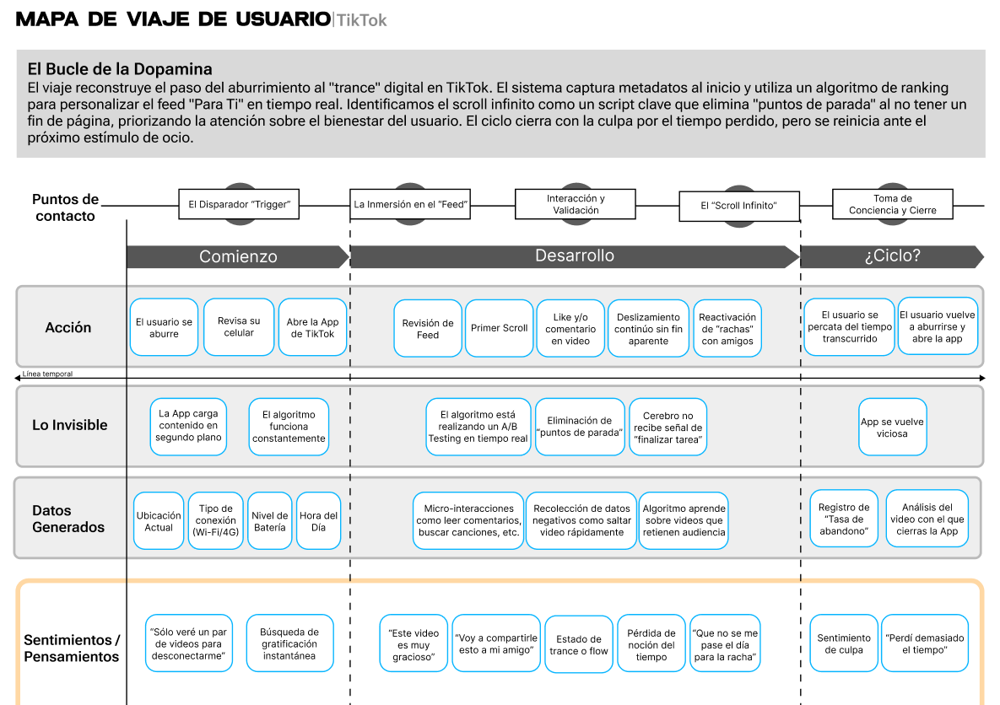

TikTok
Grupo 1 Integrantes: Isidora Cáceres - Andrés Maldonado - Sebastián Sanhueza
Mapa Sitemático

El mapa sistémico presentado describe a TikTok como un ecosistema donde el flujo principal es la conversión de datos biométricos y de comportamiento (micro-interacciones de usuario) y como se transforma en capital predictivo. Esta dinámica se sostiene mediante retroalimentaciones constantes: mientras el algoritmo refina la selección de contenido para maximizar el tiempo de permanencia, el usuario devuelve señales de satisfacción que alimentan la precisión del sistema. Es aquí donde reside el poder de la plataforma, pues al decidir qué contenido se visibiliza, el sistema no solo organiza información, sino que configura la experiencia sensible y las posibilidades de acción del usuario en el entorno digital, operando bajo la optimización máxima de la atención
Viaje de Usuario

El Disparador “Trigger”
El usuario aburrido busca con que entretenerse y abre la app de tiktok


La Inmersión en el “Feed”
El usuario comienza a revisar su feed, a dar like a videos que le parezcan divertidos, a revisar comentarios y a "scrollear"


Tres Scripts
Identificando 3 scripts del diseño de la plataforma
1- Scroll infinito (consumo)
Diseñado bajo la premisa de "consume contenido sin detenerte", se elimina cualquier límite físico o cognitivo en la interfaz. Se materializa mediante la ausencia de un fin de páginay la precarga algorítmica, sistema que asegura que el siguiente estímulo esté disponible antes de que el usuario decida terminar su sesión. En el viaje del usuario, este script domina la etapa de "Inmersión en el Feed", donde la mediación con la tecnología reduce la conciencia del tiempo transcurrido e invertido y transforma la capacidad ética de detenerse a un esfuerzo activo del usuario. Opera bajo valores de engagement y maximización de permanencia, beneficiando exclusivamente a la plataforma al aumentar la extracción de datos conductuales por sesión

2- La racha (recurrencia)
Inscrito como un mecanismo de "presencia obligatoria", este script incentiva la interacción diaria mediante la cuantificación y validación de los vínculos sociales. Se materializa a través de marcadores numéricos públicos y notificaciones reactivas que alertan sobre la pérdida inminente de la racha, transformando la socialización en una métrica que refleja rendimiento y atención. Actúa como un disparador que reinicia el ciclo utilizando la aversión a la pérdida del tiempo invertido. Los valores que lo sustentan son la fidelización forzosa y la disponibilidad constante, beneficiando a la plataforma, dado que garantiza un tráfico de usuarios predecible y recurrente.